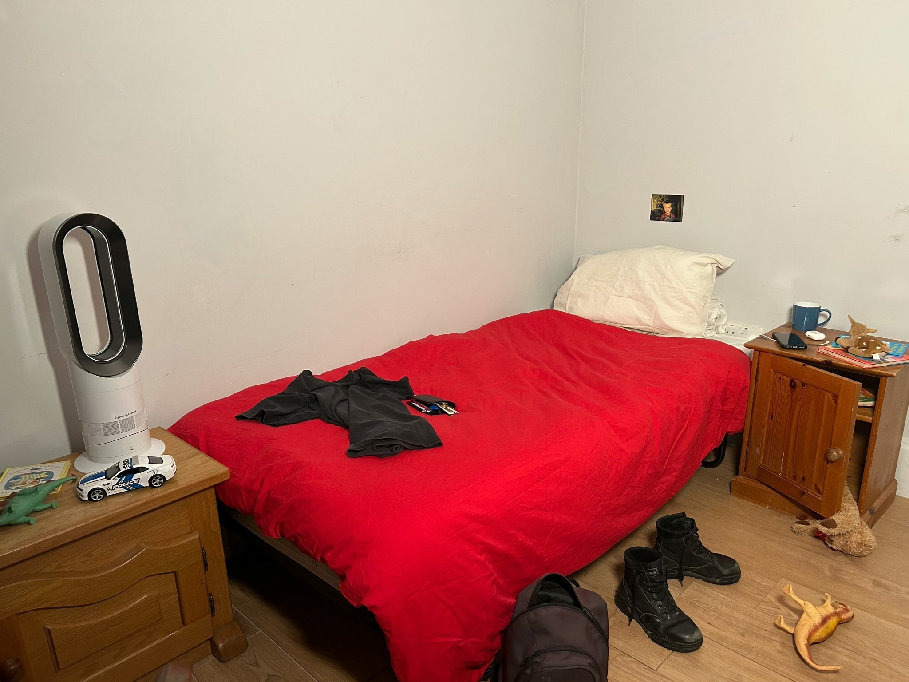
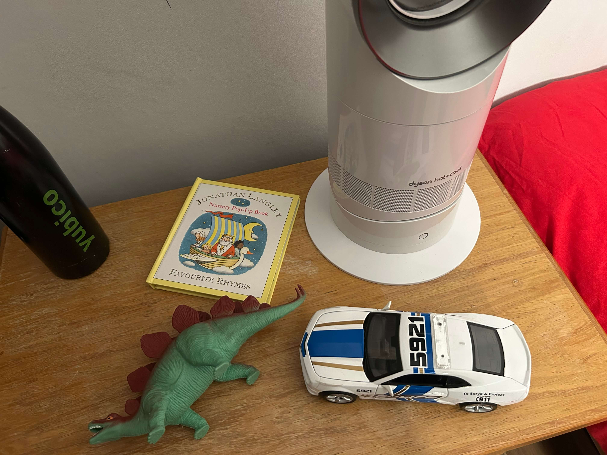
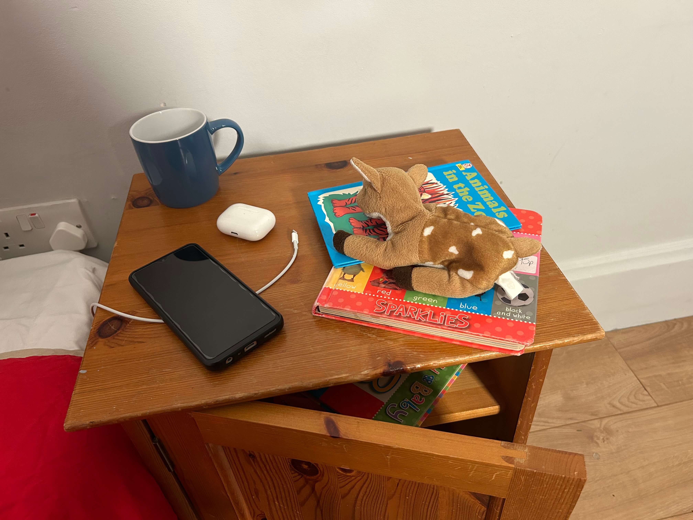

Cabinet: I put a cabinet by the door as I felt like that is a useful place to store things but also put things down whether that be David or Jack.
Bedding: When decorating this room I wanted to think about the fact that he has no female influence when decorating, This changes the way the room is decorated. As for the bedding I knew that there would be no throws or cushions as men often complain that there is not point to them as you have to take them all off when you go to bed. I also went for a what you could say is a kind of boring duvet cover as for David the design of the duvet cover is definitely not one of his priorities. The pillow case colour is also slightly off which I thought was something that he would not have even noticed but is true.
Toys: It is not only books that Jack leaves lying around in Davids bedroom. He also leaves his toys, sometimes he like to play in his Dads room, especially when David is working at his desk. There are toys dotted around the room when Jack has got bored and left them there. There are also intentional toys on his desk where Jack has given them to David as a gift, for example he has given him a car or a soft toy or made him a drink from his play kitchen. The toys in Davids room are just a selection of ones that Jack has left there as Jack has his own room in Davids flat filled with toys.
T-Shirt, Wallet, Bag and Shoes: I wanted the room to look lived in so I put items dotted around the room as if they have just been dumped there and need to be put in the actual home.
Fan: Tech items like this expensive fan are often things men like to spend their money on. Much more than a cushion for the bed or a little ornament. So I put a fancy fan on the cabinet by the bed. This is a useful spot as when it rotates it reaches the bed and the desk area.

Fan: Tech items like this expensive fan are often things men like to spend their money on. Much more than a cushion for the bed or a little ornament. So I put a fancy fan on the cabinet by the bed. This is a useful spot as when it rotates it reaches the bed and the desk area.
Toys: It is not only books that Jack leaves lying around in Davids bedroom. He also leaves his toys, sometimes he like to play in his Dads room, especially when David is working at his desk. There are toys dotted around the room when Jack has got bored and left them there. There are also intentional toys on his desk where Jack has given them to David as a gift, for example he has given him a car or a soft toy or made him a drink from his play kitchen. The toys in Davids room are just a selection of ones that Jack has left there as Jack has his own room in Davids flat filled with toys.
Childrens Books: There are childrens books dotted around the room, specifically in the bed area as it is tradition whenever Jack is staying at Davids they always read a bedtime story in his bed. The fact that there are multiple dotted around is caused by Jack. He knows that the stories live in Davids bedside table so he will take them out and ask his dad to read them at any time of the day and sometimes he will attempt to read them himself. But as is often the case with children Jack likes to get thing out but is not as much of a fan of putting things away.

Bedside Table: Davids bedside table is very simple but everything that is there is there for a reason. He has some of his tech on the bedside table. As well as a mug and a selection of children's books he will read to Jack before bed. The door of the bedside table is propped open with a teddy bear. This is another influence from Jack in the bedroom, where he has been looking through the books in the cabinet.